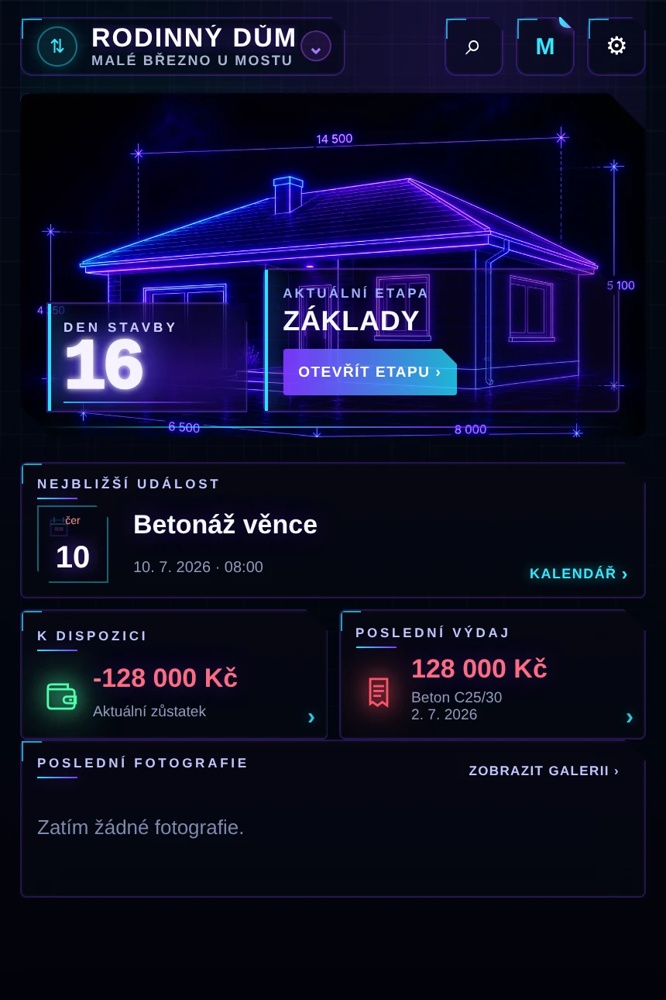
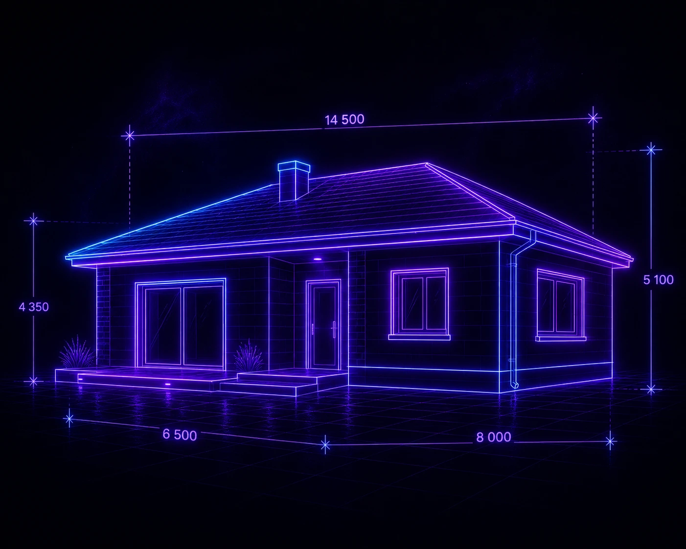

Den stavby
—Vítej v Mojí stavbě
Appka na sledování celé stavby domu — etapy, deník, fotky i finance na jednom místě. Rychle ukážeme, co kde najdeš.
Etapy stavby
V záložce Etapy si přidáš kroky stavby — vyber z předpřipravené sady (základy, hrubá stavba, střecha...) nebo si pojmenuj vlastní.
Deník a fotky
Centrální neonové plus dole ti kdykoliv rychle otevře zápis do deníku nebo přidání fotky — přímo k etapě, na které pracuješ.
Finance pod kontrolou
Stejným plus tlačítkem zapíšeš i transakci — appka sama počítá zůstatek a rozpočet po etapách.
Vyber si vzhled appky
Neon, nebo světlý motiv Technický — kdykoliv to jde změnit i později v Nastavení.
Náhled dashboardu

Založ svůj první projekt
Poslední krok. Můžeš mít později víc projektů a kdykoliv mezi nimi přepínat.

Aktuální etapa
—
Nejbližší událost
Žádná událost
Zatím není nic v kalendáři
Kalendář ›K dispozici
0 Kč
Aktuální zůstatek
›Poslední výdaj
0 Kč
Zatím žádný výdaj
›Poslední fotografie
Zatím žádné fotografie.
Stavební deník
Zatím žádné zápisy ve stavebním deníku.
Etapy
Zatím tu nemáš žádné etapy
Etapy ti pomůžou sledovat průběh, fotky i náklady stavby krok za krokem. Vyber si z předpřipravené sady, nebo si založ vlastní.
Klepni na ⋯ u etapy a nastav ji jako aktuální.
Detail etapy
Základová deska
Probíhá
Utraceno v etapě 0 KčRychle přidat
Běžné věci přidávejte přes centrální neonové plus. Nabídky zůstávají přímo v etapě.
Úkoly / další kroky
Poslední aktivita
Zatím žádný zápis.
Zatím bez výdajů
Deník etapy
Zatím žádný zápis u této etapy.
Transakce
Zatím žádná transakce v této etapě.
Nabídky
Fotky
Dokumenty
Zápis v deníku
—20Kvě2024
Dokončena betonáž základové desky.
🕑 14:30☀️ —
—Zatím žádný zápis.
Fotky (0)
Zatím žádné fotografie.
Přílohy
Zatím žádná příloha.
Galerie
Zatím žádné fotografie.
Přiřadit k zápisu
⌕ Hledat v zápisech...
Doporučené ze stejné etapy
Starší zápisy v etapě
Zatím není žádný zápis, ke kterému by šla fotka připojit.
Úkoly
Dokumenty
Nabídky
Kalendář
Kalendář
PoÚtStČtPáSoNe
Vybraný den
Dnes
UdálostMilník stavby
Žádné záznamyVybraný den je zatím prázdný
Transakce
Aktuální zůstatek
0 Kč
Zatím žádné transakce. Přidej první přes centrální plus.
Projekt
Nový projekt
Digitální projektový šanon
Výkresy, dokumentace, povolení, vlastní složky a oblíbené soubory.Poslední soubory
Zatím žádné soubory v projektu.
Složka
Tahle složka je zatím prázdná.
⚙
Nový projekt
—
Den stavby — · 0 etapVzhled
Vyber vizuální styl Dashboardu.
Projekt
Oznámení
Upozornění na událostiDáme ti vědět, když se blíží naplánovaná událost
Souhrn projektu ke sdílení
Vyber rozsah a co se má do PDF souhrnu zahrnout. Hodí se třeba pro banku, rodinu nebo řemeslníka — bez nutnosti appku vůbec mít.
Co zahrnout
Jazyk
Exporty
Záloha dat
Doporučujeme čas od času zálohovat, hlavně před smazáním appky z plochy — data appky žijí jen v tomhle telefonu.